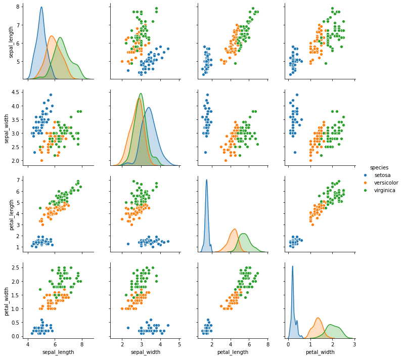
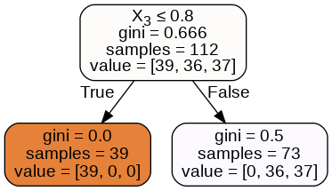
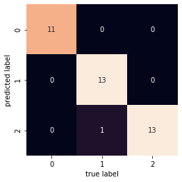

DECISION TREE¶
Important Considerations¶
PROS |
CONS |
|---|---|
Easy to visualize and Interpret |
Prone to overfitting |
No normalization of Data Necessary |
Ensemble needed for better performance |
Handles mixed feature types |
Iris Example¶
Use measurements to predict species
 Iris Example
Use measurements to predict species
Iris Example
Use measurements to predict species
%matplotlib inline
import matplotlib.pyplot as plt
from sklearn.datasets import load_iris
from sklearn import tree
from sklearn.datasets import load_iris
from sklearn.tree import DecisionTreeClassifier
from sklearn.model_selection import train_test_split
import seaborn as sns
iris = sns.load_dataset('iris')
iris.head()
| sepal_length | sepal_width | petal_length | petal_width | species | |
|---|---|---|---|---|---|
| 0 | 5.1 | 3.5 | 1.4 | 0.2 | setosa |
| 1 | 4.9 | 3.0 | 1.4 | 0.2 | setosa |
| 2 | 4.7 | 3.2 | 1.3 | 0.2 | setosa |
| 3 | 4.6 | 3.1 | 1.5 | 0.2 | setosa |
| 4 | 5.0 | 3.6 | 1.4 | 0.2 | setosa |
#split the data
iris = load_iris()
X_train, X_test, y_train, y_test = train_test_split(iris.data, iris.target)
len(X_test)
38
#load classifier
classifier = tree.DecisionTreeClassifier()
#fit train data
classifier = classifier.fit(X_train, y_train)
#examine score
classifier.score(X_train, y_train)
1.0
#against test set
classifier.score(X_test, y_test)
0.9736842105263158
How would specific flower be classified?¶
If we have a flower that has:
Sepal.Length = 1.0
Sepal.Width = 0.3
Petal.Length = 1.4
Petal.Width = 2.1
classifier.predict_proba([[1.0, 0.3, 1.4, 2.1]])
array([[0., 0., 1.]])
#cross validation
from sklearn.model_selection import cross_val_score
cross_val_score(classifier, X_train, y_train, cv=10)
array([1. , 1. , 1. , 1. , 0.83333333,
0.83333333, 0.90909091, 1. , 1. , 0.88888889])
How important are different features?¶
List item
List item
#list of feature importance
classifier.feature_importances_
array([0. , 0.03796762, 0.39709885, 0.56493354])
importance = classifier.feature_importances_
plt.bar(['Sepal Length', 'Sepal Width', 'Petal Length', 'Petal Width'], importance)
<BarContainer object of 4 artists>

Visualizing Decision Tree¶
from sklearn.externals.six import StringIO
from IPython.display import Image
from sklearn.tree import export_graphviz
import pydotplus
dot_data = StringIO()
export_graphviz(classifier, out_file=dot_data, filled=True, rounded=True, special_characters=True)
graph = pydotplus.graph_from_dot_data(dot_data.getvalue())
Image(graph.create_png())

What’s Happening with Decision Tree¶
import seaborn as sns
iris = sns.load_dataset('iris')
sns.pairplot(data = iris, hue = 'species');

Pre-pruning: Avoiding Over-fitting¶
max_depth: limits depth of treemax_leaf_nodes: limits how many leafsmin_samples_leaf: limits splits to happen when only certain number of samples exist
classifier = DecisionTreeClassifier(max_depth = 1).fit(X_train, y_train)
classifier.score(X_train, y_train)
0.6785714285714286
classifier.score(X_test, y_test)
0.631578947368421
dot_data = StringIO()
export_graphviz(classifier, out_file=dot_data, filled=True, rounded=True, special_characters=True)
graph = pydotplus.graph_from_dot_data(dot_data.getvalue())
Image(graph.create_png())

classifier = DecisionTreeClassifier(max_depth = 2).fit(X_train, y_train)
classifier.score(X_train, y_train)
0.9642857142857143
classifier.score(X_test, y_test)
0.8947368421052632
dot_data = StringIO()
export_graphviz(classifier, out_file=dot_data, filled=True, rounded=True, special_characters=True)
graph = pydotplus.graph_from_dot_data(dot_data.getvalue())
Image(graph.create_png())

classifier = DecisionTreeClassifier(max_depth = 3).fit(X_train, y_train)
classifier.score(X_train, y_train)
0.9821428571428571
classifier.score(X_test, y_test)
0.9736842105263158
Confusion Matrix¶
from sklearn.metrics import classification_report
import sklearn.metrics
from sklearn.metrics import confusion_matrix
classifier=classifier.fit(X_train,y_train)
predictions=classifier.predict(X_test)
mat = confusion_matrix(y_test, predictions)
sns.heatmap(mat.T, square=True, annot=True, fmt='d', cbar=False)
plt.xlabel('true label')
plt.ylabel('predicted label');

sklearn.metrics.confusion_matrix(y_test, predictions)
array([[11, 0, 0],
[ 0, 13, 1],
[ 0, 0, 13]])
dot_data2 = StringIO()
export_graphviz(classifier, out_file=dot_data2,
filled=True, rounded=True,
special_characters=True)
graph2 = pydotplus.graph_from_dot_data(dot_data2.getvalue())
Image(graph2.create_png())

sklearn.metrics.accuracy_score(y_test, predictions)
0.9736842105263158